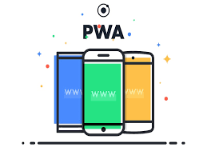

My first Progressive Web Application

Introduction
- PWA is not an API or technology, its a web development approach.
- Progressively enhance web apps to look and feel like native apps.
- It is not like responsive design to look good on both mobile and web.
- PWA app
- should be reliable (load fast even when you are offline),
- should be fast (respond to user actions)
- should be engaging (by using push notification)
- It works when you dont have internet connection leveraging data cached during your last interaction with your app.